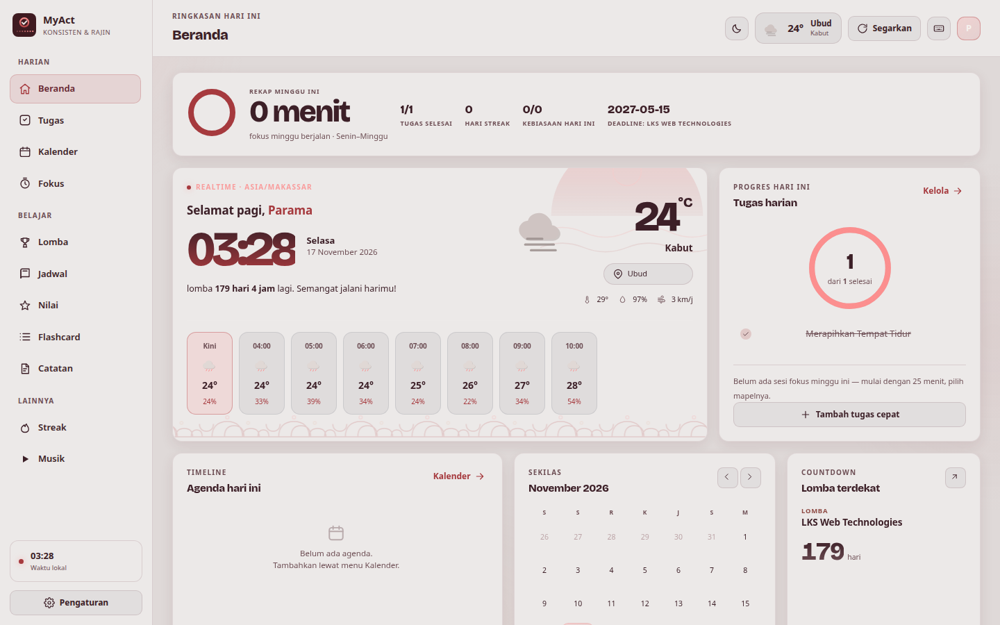
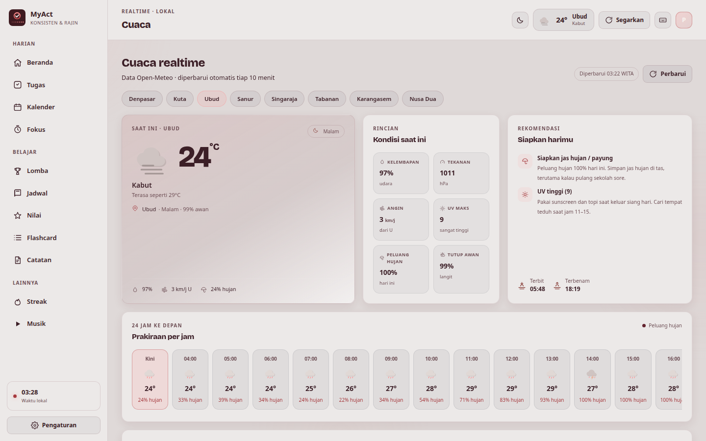
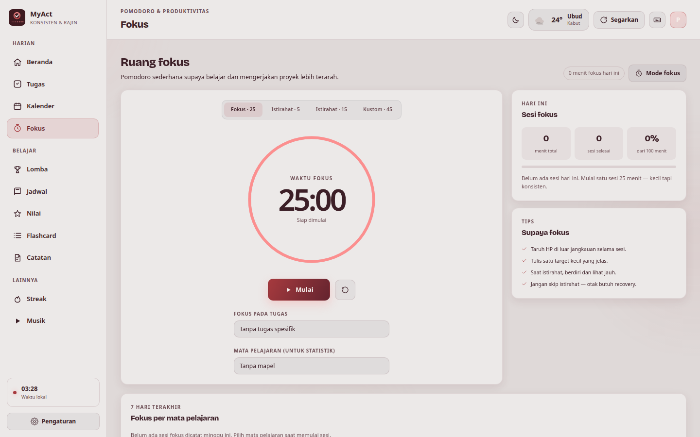

Tugas harian
Checklist yang otomatis reset tiap hari, membawa tugas belum selesai, lengkap dengan prioritas dan rutinitas.
Dashboard harian lokal
Konsisten & rajin setiap hari
Satu tempat untuk tugas, fokus, kebiasaan, lomba, dan cuaca Indonesia. Semua berjalan di laptopmu sendiri — tanpa akun, tanpa cloud, tanpa langganan.

Beranda Harita — ringkasan hari dalam satu layar.
Fitur
Dirancang untuk dipakai setiap hari: cepat dibuka, jelas dibaca, dan tetap ringan karena berjalan langsung di perangkatmu.
Checklist yang otomatis reset tiap hari, membawa tugas belum selesai, lengkap dengan prioritas dan rutinitas.
Pomodoro 25/5 menit atau durasi kustom, dengan statistik sesi per mata pelajaran dan mode layar penuh.
Bangun kebiasaan dengan multi-habit streak dan heatmap 112 hari, supaya progres kecil tetap terlihat.
Catat uang keluar per kategori, lihat rata-rata harian, dan jaga anggaran bulanan dengan bilah progres.
Countdown otomatis untuk lomba dan tenggat, plus checklist persiapan agar tidak ada yang terlewat.
Spaced repetition klasik gaya Anki. Ulangi di waktu yang tepat dan ingat lebih lama dengan usaha lebih sedikit.
Cuaca 16 kota Indonesia lewat Open-Meteo, tanpa API key, dengan pembaruan otomatis sepanjang hari.
Tangkapan layar
Tema gelap terracotta yang nyaman untuk sesi panjang. Semua tangkapan layar di bawah diambil langsung dari aplikasi.


Privasi
Harita tidak mengirim datamu ke mana pun. Tugas, catatan, nilai, dan riwayat fokus tersimpan di database SQLite di komputermu. Tidak ada login, tidak ada sinkronisasi paksa, dan tidak ada pelacakan.
Mulai cepat
Windows hanya butuh Python 3 dan satu baris installer. Linux/macOS bisa clone source langsung. Tidak ada dependency pihak ketiga atau proses build.
http://127.0.0.1:8777
Installer Windows membuat shortcut desktop. Untuk Linux/macOS, gunakan ./run.sh.
Port bisa diubah lewat HARITA_PORT, misalnya HARITA_PORT=8780 ./run.sh.
# Windows PowerShell / CMD (tanpa Git)
iwr -UseBasicParsing https://raw.githubusercontent.com/hayoloo642-cloud/harita-project/master/install.ps1 -OutFile harita-install.ps1
powershell -NoProfile -ExecutionPolicy Bypass -File .\harita-install.ps1
# Linux / macOS
git clone https://github.com/hayoloo642-cloud/harita-project.git
cd harita-project
./run.sh
# Buka di browser
http://127.0.0.1:8777